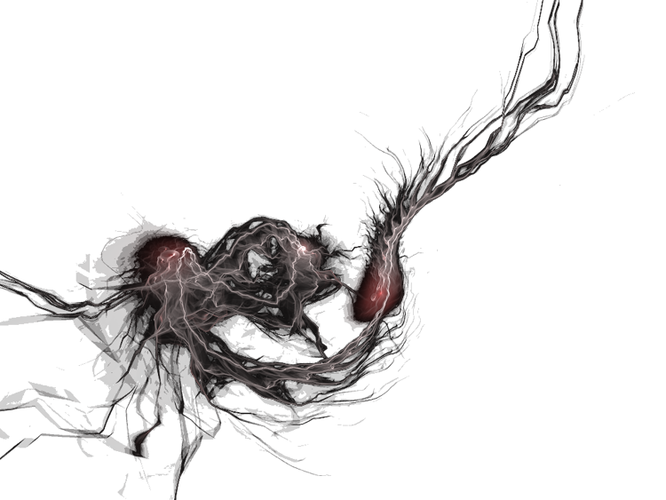
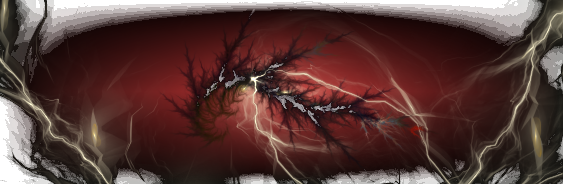
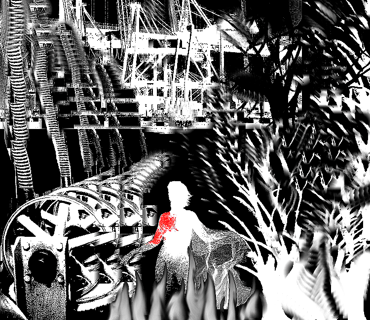
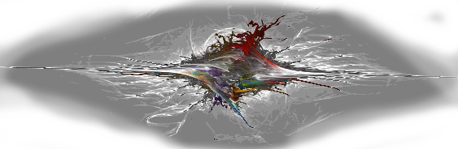
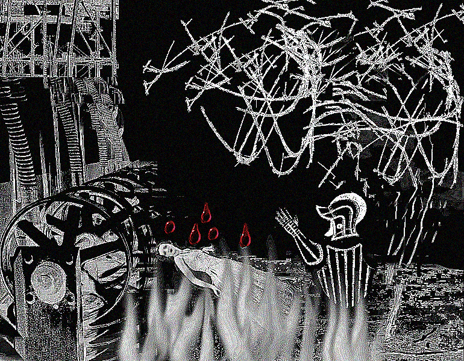
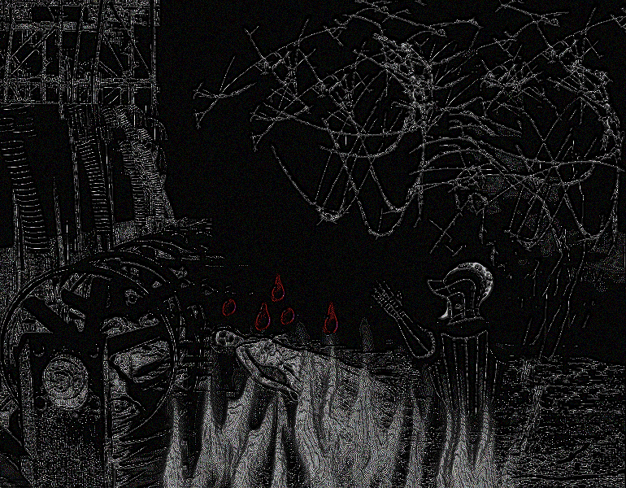

Poems and Vignettes
Dream
Being a Musing on the Events of "Eater", Which Should be Read First
Illustrated by Teoretisk
"Red. White. Black. This is what I dreampt.
"I remember—nothing, but one thing. It is a dream that comes again and again. I remember her look—the essence of her expression, the message it carried—but I do not remember the shape of her face, what she looked like. I do not remember whether she was beautiful or not.
"But she was strong. I could tell that by the way her back twisted as her legs died, by the way she carried her arms and hands until they burned.
"We were high in some vast structure. Vast.
"We were there to kill her. The room was full of fire. White fire.
"I was wearing armour. Such a suit. I bore it like a second skin.
"And I remember we were—outraged at her. Traitress. Betraying Woman. Witch.
She had brought the invaders in. Things like black trees of lightning, that moved faster than sight.
"We burned them, we cleaned the world — for the great building was our World, where we had lived for ever — we burned every inch of it clean. Some of us died, fighting. I don't know exactly how we fought: it was our place to direct the fire, somehow. We didn't have weapons in our hands.
"When we died, we risked more than death, worse than death. And I don't know how that can be.
"All this battle is behind the dream, behind the vision, but not present. I did not see it, but the memory of it is there inside the dream.
"So much fighting.
"We were victorious. We came to the last room, the heart of the invasion, and she was there, among the Others.
"We poured in the fire, slaughtered our foes, and only she was left.
"Red? Her head was broken. I could see bone. She was blood all down her breast and flank. Her left arm was soaked.
"White? Her skin, and her hair. White as lightning. Whiter than the fires we directed.
"Black? Her eyes. Black like the Night, that lived outside. Blacker than the things that darted about her as we closed the barriers in upon them.
"And yet I cannot remember her face.
"And at last she fell. I would have been unaffected by any plea, any reasoning. But she stepped forward into the fire, and her legs died. She fell, and then I saw: she was trying to keep balance. Not to be forgiven. Not to survive. Just to go gracefully, not to sprawl, like some slut, but to kneel, submit, and die properly.
"To go gracefully.
"How could They have imitated that?
"The invaders could not have understood that. Never, never. And I saw She was still there, still human inside.
"But I could not save her. She fell down to her knees, hard, limp. She lost balance, and tried to support herself on one hand. But as it touched the fire, her flesh died. The hand she tried to support herself on died. And as her arm failed and buckled, she looked up. She looked right into my eyes.
"And that is what I see, again and again—that look. The message of that look. Not the shape of her face or the texture of her skin, but what that look communicated, what it meant. For in the middle of that fire, she was not compelled by fear or hope of mercy. She was outraged by the awkwardness of her actions, by the lack of grace she had been compelled to.
"Laugh at me. Say I am in love with a ghost. But if she had looked at you.
"I did something not permitted. I raised my hand and saluted her. I made a sign of high honour. And I saw her acknowledge me. I saw in her eyes that she saw my salute.
"What happened then? I was rebuked, and harshly, I think. But I don't truly know what happened next.
"I remember nothing more.
"But this is what I do remember.
"Her look. Red, White, Black."
